Astrofysikk
Spørsmål
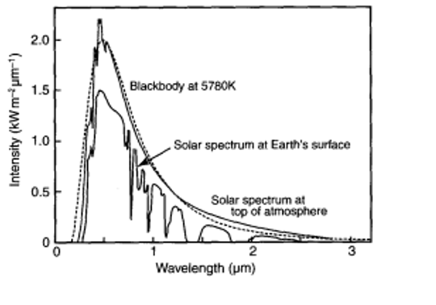
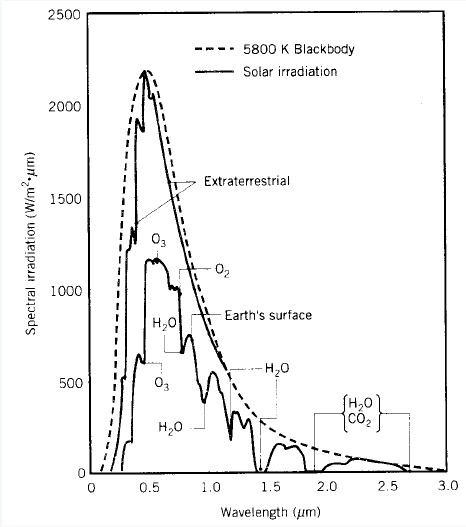
Stjernefødsel

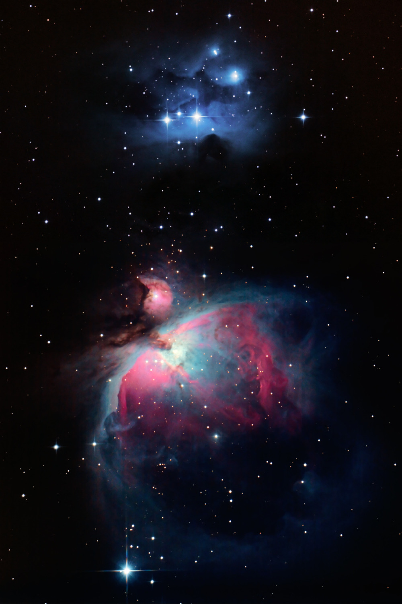
Fra fødsel til "overgangsalder" følger en stjerne fire trinn:
- Tåke med tetthet over \(10^{-16}\mskip3mu\textrm{kg/m}^3\)
- Kuleformet tåke som sender ut infrarød stråling ("globule")
- Protostjerne som sender ut synlig lys
- Stabil stjerne med sentraltemperatur over \(5000\mskip3mu\textrm{K}\)
HR-diagrammet

Livet på hovedserien
I hovedserien omdannes hydrogen til helium i stjernens sentralområdet. Dette skjer på følgende to forskjellige måter:
- proton-proton-kjeden
- karbonsyklusen (stjerner med masse størren enn rundt 1,3 solmasser)
PP-kjeden kan skrives slik \(4^1_1\textrm{H} \rightarrow ^4_2\textrm{He} + 2\textrm{e}^{+} + 2\nu + \gamma\)
Stjerner befinner seg på hovedserien så lenge hydrogen fusjoneres til helium i sentralområdet av stjernen. Stjerner med stor masse har lang levetid, og motsatt.
Det nærmer seg slutten
Når omlag 10 % av den opprinnelige stjernemassen har fusjonert, er det for lite hydrogen til å opprettholde fusjonen og sentralområdet begynner å trekke seg sammen. Dette øker temperaturen, og vi kommer til et punkt hvor temperaturen er tilstrekkelige til å fusjonere helium til karbon.
Strålingstrykket blir nå så stort, at stjernen blåser seg opp til å bli en rød kjempesterje. Når det blir for lite helium, fusjonsområdene nærme seg overflaten på stjerna, som så vil blåse bort de ytre lagene sine.
Var utgangsmassen tilstrekkelig liten, vil vi så få en planetarisk tåke, alternativt en rød superkjempe.
Stjernedød
| \(\textrm{M}_\textrm{R}\) - restmasse | Stjernens sluttfase |
|---|---|
| \(\textrm{M}_\textrm{R} < 1,4\mskip3mu\textrm{M}_\odot\) | Hvit dvergstjerne |
| \(1,4\mskip3mu\textrm{M}_\odot < \textrm{M}_\textrm{R} < 2-2,5\mskip3mu\textrm{M}_\odot\) | Nøytronstjerne |
| \(\textrm{M}_\textrm{R} > 2-2,5\mskip3mu\textrm{M}_\odot\) | Svart hull |
Hvit dvergstjerne
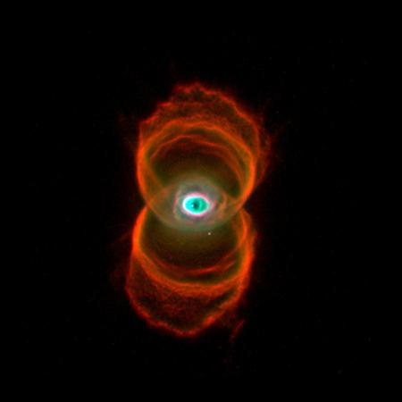
Dette er en liten, kompakt (en sukkerbit av denne veier 10 - 30 tonn) stjerne som er rundt like stor som jorda. Denne hvite dvergen avkjøles sakte, før den ender som en brun dverg.
Nøytronstjerne
I Kina i 1054 blei det observert en ny stjerne på himmelen, denne "stjernen" har vi seinere funnet ut at var en supernova.
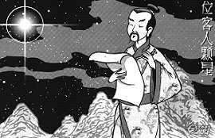
Restene av denne supernovaen kalles Krabbetåken
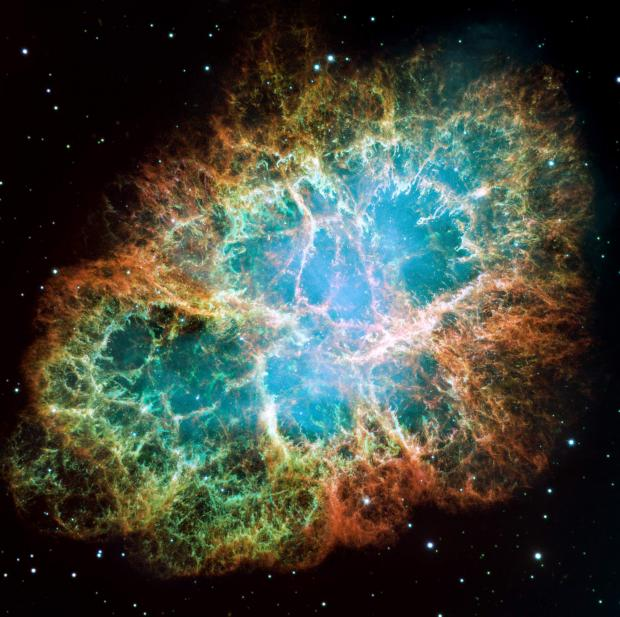
Supernovaer kan etterlate seg nøytronstjerner. Disse har en radius på rundt 10 km, med en enorm tetthet (en sukkerbit har en masse på en milliard tonn).
Svart hull

For virkelig tunge stjerner (førti solmasser og mer), bryter selv nøytronstjernene sammen. V
Kollisjonskurs
Utsikten fra jorda
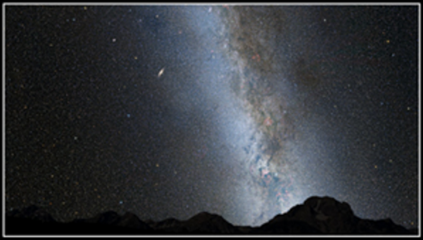
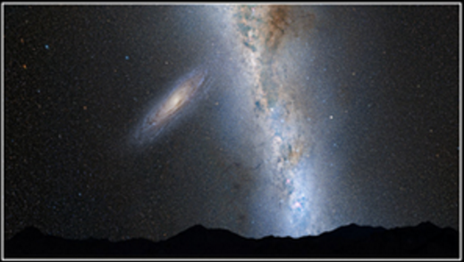
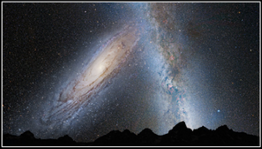
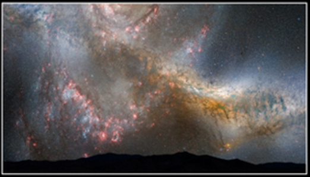
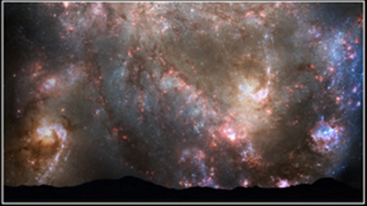
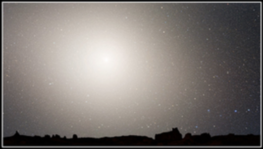